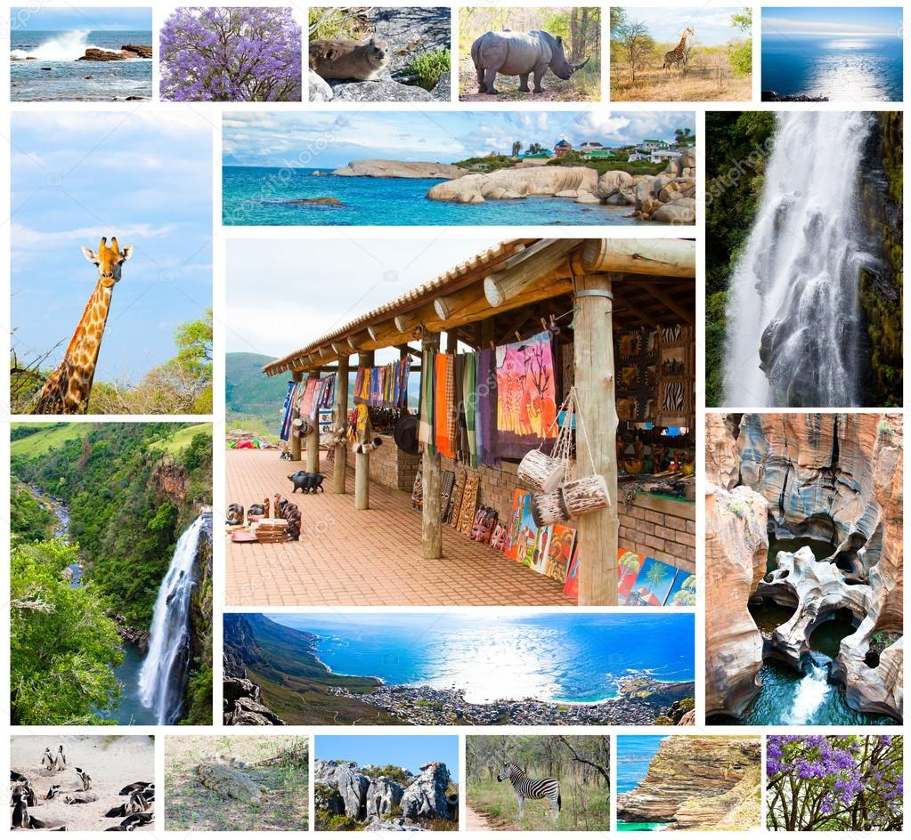

South Africa is the 25th largest country in the world and is bordered by Namibia, Botswana, Zimbabwe, Mozambique, Swaziland, and Lesotho. The country has an extensive coastline, which is bordered in the west by the Atlantic Ocean and to the south and southeast by the Indian Ocean. South Africa covers an area of approximately 1.21 million square kilometers, making it roughly twice the size of France or three times the size of Germany. The country is made up of nine provinces, which all vary substantially in a number of respects. The interior consists mostly of a flat plateau (rising from about 1000 meters to 2100 meters above sea level), and the areas next to the coast extend from 800 meters to sea level. Situated on the southwestern coast, the Western Cape Province is home to the countrys oldest city and legislative capital, Cape Town (established in 1652). Vineyards thrive in the mild Mediterranean climate of the province and white sandy beaches beckon tourists. Moving north up to the Northern Cape, the surroundings become increasingly arid and sparsely populated, with wide and seemingly never-ending horizons. Over to the North West province, the landscape is dominated by grassland with a few hardy trees dotted about. The massive casino complex Sun City, with its evocative ‘lost city’ theme, can be found in this province too. Situated almost precisely in the center of South Africa is the Free State province, where the judicial capital Bloemfontein can be seen, amongst a succession of flat plains. Moving south, one encounters the rugged coast of the Eastern Cape, which is also home to Tiffindell (the country’s only snow skiing resort). The Eastern Cape is also a hub for the automotive manufacturing industry, with access to harbors in Port Elizabeth and East London. Further north along the coast Kwazulu-Natal province looms large. The tropical climate and abundant rainfall ensure that the landscape is lush and verdant. Inland from there the rocky and mountainous Mpumalanga province beckons; a mainly agricultural area. Some of the oldest rocks on earth may even be found in this area. The most Northern Province, Limpopo, shares its name with the river that snakes and winds, forming the border between South Africa and its neighbors. The Kruger National Park can also be visited here to see the Big 5. Then there is the province of Gauteng, the most densely populated and urbanized area in South Africa. Pretoria, the administrative capital, and Johannesburg are the two biggest settlements in the province that has the biggest population out of all the areas, even though it is, in fact, the smallest. Demographics The total population of South Africa is around 57 Million, with the Gauteng province being the most populated (24% of the population lives here). Kwa Zulu Natal is the next most populated province (18%) followed by the Eastern Cape (13%) and the Western Cape (11%). The provinces of Gauteng (Johannesburg, Pretoria) and Western Cape (Cape Town) often stand out as the most developed provinces and also enjoy the highest levels of average household income. The provinces of the Eastern Cape and Limpopo are the poorest provinces with average household income being the lowest. Around 68% of South Africans live in urban areas. This figure is constantly growing as people migrate from rural areas to the cities in search of opportunities. There are still many fairly densely populated areas in rural and unindustrialised parts of the country. This is a lingering legacy of centuries of racial discrimination and segregation of the Apartheid-era government. Former Native Reserves and homelands/Bantustans were intended to segregate South Africa’s black population from ‘whites-only’ urban areas. The former Transkei and Ciskei homelands in the Eastern Cape are examples of this. Ethnicity Nelson Mandela referred to South Africa as the “Rainbow Nation” because of its racial diversity. The population of South Africa is one of the most complex and diverse in the world. The vast majority of South Africans classify themselves as Black African (79%). This population group, however, is not culturally or linguistically homogeneous. Major ethnic groups include the Zulu, Xhosa, Basotho (South Sotho), Bapedi (North Sotho), Venda, Tswana, Tsonga, Swazi, Khoikhoi, San people and Ndebele, all of which speak predominantly Bantu languages. The Coloured population comprises 8.8% of South Africas total population, is mainly concentrated in the Cape region. Coloured is a term used for people of mixed race decent in South Africa. Although many visitors might view the term as being politically incorrect, in South Africa, it is not a derogatory term and is not offensive. Coloured people in South Africa descend from a combination of ethnic backgrounds, namely Indonesian, Malaysian, Indian, Malagasy and Asian blood, as well as the indigenous Khoisan (the Cape’s first inhabitants), white settlers and black Africans. Whites in South Africa comprise 8.4% of the population and are predominantly descendants of Dutch, German, French Huguenots, British and other European settlers. Culturally and linguistically, they are divided into two groups, the Boers, who speak Afrikaans, and English-speaking groups, who are descended mainly from the British. Indian South Africans/Asians comprise 2.5% of the total population. The majority of the Indian/Asian population are descendants from India, many of them descended from indentured workers brought in the nineteenth century to work on the sugar plantations of the eastern coastal area then known as Natal (now known as KwaZulu Natal). Economy South Africa has the second largest economy in Africa (Nigeria has the largest), and the 41st largest in the world. It is the only African country to be part of the G-20. Unlike most other African economies which still rely heavily on mining and agriculture, the South African economy is fairly diversified. The service, manufacturing, financial and retail sectors together make up about half of GDP output. Mining and agriculture combined contribute less than 8%. South Africa is considered to be a fairly industrialized nation, and on the basis of GDP per capita, South Africa is classified as an upper-middle income economy by the world bank. This, however, is greatly misleading, as wealth distribution in the country is exceptionally skewed, and unemployment and poverty are rife. The unemployment rate is 27% and thirty million people, or one out of every two, live below the poverty line. South Africa has the highest Gini coefficient in the world, which means it has the most uneven distribution of income of any other country. Wealth is very much defined by racial groups, with White and Indian South Africans experiencing the highest levels of income, and Coloured and Black South Africans bearing the brunt of unemployment and poverty.